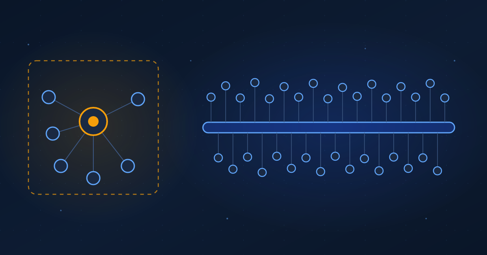

Coordinating a Thousand Agents
Keeping a central coordinator is a use-case call, and past the scale where it saturates, removing it becomes a necessity that makes agent count a new scaling dimension.
Ibrahim AbuAlhaol, PhD, P.Eng., SMIEEE
AI Technical Lead
Most multi-agent systems have a boss. A central orchestrator reads the task, splits it into pieces, hands each piece to a worker, gathers the results, and decides what happens next. It is the obvious design, and it carries a ceiling built in: the orchestrator can only track, assign, and merge so much before it becomes the slowest part of the system.
Agensh, a harness from Microsoft Research, is an experiment in what happens when you take the boss out. There is no coordinator. Workers share a common workspace, a way to message each other, and a shared record of what has been tried. Coordination is not issued from the top. It comes out of the infrastructure the workers stand on. With the bottleneck gone, the system was run with more and more workers, and the results kept improving all the way to 1,024 agents at once.
Why a coordinator becomes a ceiling
A central orchestrator does real work. It breaks the task down, holds the master plan, routes each subtask, and reconciles the answers that come back. Every one of those jobs grows with the number of workers. Ten agents are easy to track. A hundred means the orchestrator spends most of its context just holding state about who is doing what. The coordinator's own capacity, its context window, its reasoning budget, its one-decision-at-a-time loop, sets the practical limit on how many workers can be useful at once.
This is an old pattern. Any system that funnels all traffic through one point inherits that point's limits. The database that every request must hit. The single build server. The one senior engineer who signs off on every design. Adding workers behind a single coordinator eventually slows the whole system down, because the coordinator has become the shared resource everyone waits on.
"When every worker reports to a coordinator, the coordinator's capacity is the ceiling. Take the coordinator out and the ceiling moves to how much shared infrastructure you can give the workers instead."
Coordination without a coordinator
The alternative is old too, and it comes from watching insects. An ant colony builds elaborate structures with no ant in charge. Each ant follows simple local rules and reads signals other ants have left in the environment. Coordination lives in the shared environment, not in an orchestrator. Researchers named the idea stigmergy and built optimization algorithms on it.
Agensh applies the same principle to language-model agents. Three pieces of shared infrastructure stand in for the orchestrator:
- A shared workspace: a Git repository every worker can read and change, so progress is visible as commits.
- A message interface: a task channel plus direct messages, so any worker can signal, ask, or answer another without routing through a hub.
- A shared context: an append-only log of typed entries (what was observed, what is a confirmed fact, what failed, which subtask a worker has claimed, what a patch did) so no worker starts blind.
Each worker runs the same loop: look at the shared state, pick something useful that nobody else is handling, do it, and write the result back where others can see it. No worker holds the master plan, because the plan is the state of the workspace itself.
The number of agents is a scaling dimension
Scaling laws taught the field that model quality improves predictably as you add parameters, data, and training compute. Those are the dimensions everyone tunes. Agensh points at another one that has been mostly ignored: the number of agents working a problem at the same time.
Tested on the five hardest tasks in a coding benchmark called ProgramBench (real defects in projects like FFmpeg and pandoc, a six-hour budget, no internet access), adding workers raised the pass rate. Not for the first few and then flat. Averaged across the tasks, going from 1 to 128 agents lifted the mean test-pass rate from 19.31% to 28.78%, close to a 50% relative gain. On the pandoc task the climb ran much further: from 33.89% with a single agent to 55.06% with 1,024. More attempts, more variety in approach, and a shared record that lets a later worker build on an earlier one's partial progress combine into a curve that keeps bending upward where a single agent, or a coordinator-bound team, would have stalled.
This lines up with a result seen elsewhere. Ask a model the same hard question many times and the chance that at least one answer is correct climbs sharply, often well past what one careful attempt reaches. A decentralized swarm is repeated sampling with memory: the attempts are not independent, because each worker can see and extend what the others have already done.
The choice is a use case, not a verdict
None of this makes the orchestrator a mistake. For most work it is the right design. When a task splits cleanly into a few known steps, a coordinator is simpler to build, cheaper to run, and far easier to debug, because one place holds the plan and you can read it. A quick edit, a three-step pipeline, a job with a fixed recipe: put a coordinator on it and move on. Firing the orchestrator there would trade a clear system for a harder one and get nothing back.
The decentralized design earns its keep on a different kind of problem: hard, open-ended, and checkable, where you cannot write the recipe in advance and a single attempt is often wrong. There you want many workers exploring at once, and the real question becomes how many you can run before coordination overhead eats the gain.
That is where the second half of the argument comes in. Past a certain scale, decentralization stops being a preference and becomes the only option. A coordinator that has to track a thousand workers spends its whole budget on bookkeeping and none on the task. If the problem genuinely needs that many attempts, no smarter coordinator rescues you, because the coordinator itself is the thing you have to remove. So the honest framing is two-sided. Below the scale where the coordinator saturates, pick whichever design is simpler for the job. Above it, decentralization is a necessity, not a matter of taste.
The swarm is also not free. Running many workers in parallel spends tokens and money in proportion to the count, and the shared infrastructure has to be fast enough that workers are not all waiting on the same state. That cost is the reason to reserve the swarm for problems where a single pass is unreliable and the budget is there to spend, and to leave the coordinator in place everywhere else.
From directing workers to feeding a swarm
When you do reach for the decentralized design, the mental model changes. With an orchestrator, you improve results by making the coordinator smarter. Without one, you improve results by making the shared infrastructure better and by adding workers. The unit of investment moves from the orchestrator to the environment the workers share.
So the question to ask about any large agent system is not whether coordinators are good or bad. It is whether this particular workload has outgrown its coordinator. For a small, well-defined job the answer is no, and a coordinator is the right tool. For a hard, checkable problem you want to attack with hundreds of attempts, the coordinator is a chokepoint, and the fix is to stop routing everything through one place.
What leaders should do
- Match the design to the task, not to a trend. If a workload splits into a few known steps, keep the coordinator; it is simpler and cheaper. Reserve the decentralized swarm for hard, open-ended problems with an automatic pass or fail signal.
- Find the scale where your coordinator saturates. On one current multi-agent workload, log how much of the orchestrator's budget goes to judgment versus tracking who does what. The point where tracking dominates is the point where adding workers stops helping.
- Invest in shared infrastructure before adding agents. A fast shared workspace, a message channel, and a common record of attempts are what let worker count scale past that point. Build those first, then turn up the number of workers and watch the pass rate.
- Treat the number of agents as a dial with a budget. Set an explicit spend ceiling per task and move agent count like any other scaling knob: up when the problem is hard, verifiable, and worth the compute; down when a single pass or a small coordinated team already does the job.
Related Articles
References & Extended Literature
- Zhan, Z., Song, T., Dong, L., Huang, S., Lian, J., Xia, Y., & Wei, F. (2026). "Agensh: Scaling Organizational Intelligence to 1,024 Agents." Microsoft Research. arXiv:2609.26781. arxiv.org/abs/2609.26781
- Li, J., Zhang, Q., Yu, Y., Fu, Q., & Ye, D. (2024). "More Agents Is All You Need." arXiv:2402.05120. arxiv.org/abs/2402.05120
- Brown, B., Juravsky, J., Ehrlich, R., et al. (2024). "Large Language Monkeys: Scaling Inference Compute with Repeated Sampling." arXiv:2407.21787. arxiv.org/abs/2407.21787
- Hayes-Roth, B. (1985). "A Blackboard Architecture for Control." Artificial Intelligence, 26(3), 251-321. DOI
- Dorigo, M., & Stützle, T. (2004). "Ant Colony Optimization." MIT Press. MIT Press
- Anthropic. (2025). "How we built our multi-agent research system." anthropic.com
- Kaplan, J., McCandlish, S., Henighan, T., et al. (2020). "Scaling Laws for Neural Language Models." arXiv:2001.08361. arxiv.org/abs/2001.08361